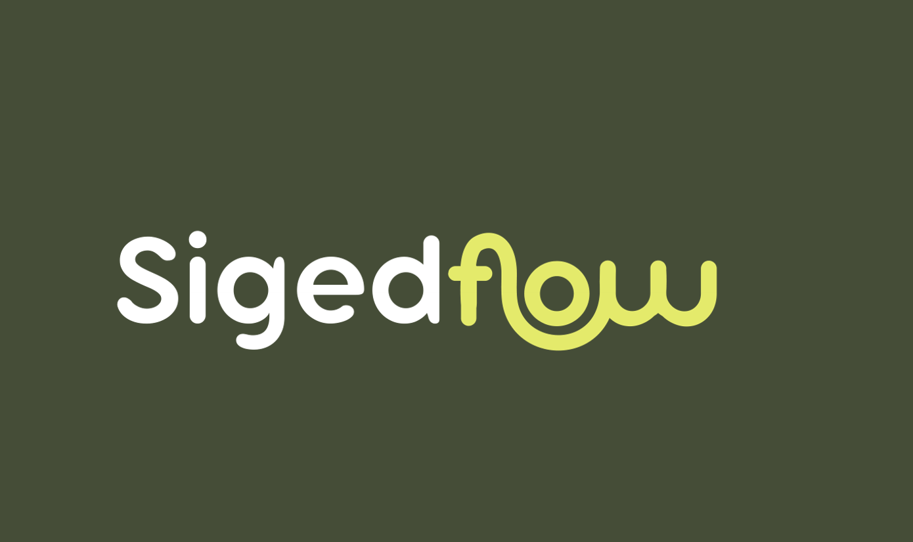

A inteligência que conecta leis, processos e pessoas para qualificar a educação.
O SIGEDflow é uma infraestrutura digital de governança educacional que integra Governança, Gestão Pedagógica e Gestão Acadêmica, conectando documentos, pessoas, processos e dados para fortalecer a gestão e contribuir para a melhoria contínua da qualidade educacional.
Mais do que organizar informações, o SIGEDflow aproxima o planejamento da prática, permite acompanhar compromissos institucionais e oferece subsídios para decisões mais ágeis, seguras e fundamentadas em evidências.
Informação qualificada. Decisões fundamentadas. Gestão que deixa legado.

Muitas informações. Pouca conexão. Decisões cada vez mais complexas.
As redes de ensino possuem documentos, planejamentos, sistemas acadêmicos e profissionais comprometidos com a qualidade educacional.
Entretanto, essas informações frequentemente permanecem dispersas entre arquivos, setores e sistemas, dificultando o acesso às diretrizes, a organização dos processos, o acompanhamento das ações e a análise dos resultados.
- Documentos nem sempre orientam as práticas.
- Planejamentos nem sempre são acompanhados.
- Informações acadêmicas nem sempre dialogam com a gestão.
- E as mudanças nas equipes podem comprometer a continuidade do conhecimento institucional.
O desafio não é apenas produzir dados, mas garantir que as informações sejam acessíveis, confiáveis e utilizadas para orientar decisões e transformar realidades.
O SIGEDflow foi concebido para enfrentar essa fragmentação, conectando diferentes dimensões da gestão em uma infraestrutura tecnológica orientada por dados.
Não é mais um sistema de gestão acadêmica. É uma infraestrutura de governança educacional.
Os sistemas acadêmicos são fundamentais para administrar a rotina escolar, organizando matrículas, turmas, frequência, notas, avaliações e outras informações da vida estudantil. O SIGEDflow possui uma finalidade complementar: conectar as diretrizes institucionais aos processos, às responsabilidades, às práticas pedagógicas e às evidências de implementação, apoiando uma gestão mais integrada e orientada à qualidade educacional.
Não é apenas um repositório de documentos.
A infraestrutura apoia a organização, a qualificação, o alinhamento e a utilização dos documentos norteadores como referências efetivas para a gestão.
Não substitui a decisão humana.
A tecnologia relaciona informações, organiza evidências e apoia análises. As decisões e validações permanecem sob responsabilidade dos profissionais e das instâncias competentes.
Não pretende substituir os sistemas acadêmicos existentes.
Sua arquitetura prevê a conexão com informações desses sistemas, conforme a disponibilidade e a viabilidade das integrações, ampliando a capacidade de análise institucional.
Seu diferencial está em conectar o que a instituição estabelece com base nas leis, o que as pessoas realizam e o que os dados revelam.
Governança, Gestão Pedagógica e Gestão Acadêmica conectadas pela tecnologia.
O SIGEDflow está estruturado em três pilares complementares que relacionam planejamento institucional, implementação das práticas e resultados educacionais.
Pilar 1 — Governança Educacional
Diretrizes claras. Processos organizados. Compromissos acompanháveis.
O pilar de Governança organiza os documentos e processos que fundamentam a gestão educacional, favorecendo o alinhamento institucional, a rastreabilidade, a transparência e a continuidade das decisões.
Documentos norteadores
Acesso online às versões disponibilizadas e atualizadas dos Projetos Político-Pedagógicos, Regimentos Escolares, Planos de Gestão e demais documentos institucionais, conforme as permissões de gestores, equipes escolares e Secretarias de Educação.
Alinhamento documental e rastreabilidade
Acompanhamento dos processos de elaboração, revisão, atualização e alinhamento dos documentos norteadores, com registro de versões, responsáveis, encaminhamentos e histórico de alterações.
Visão integrada da rede
Organização e consulta de informações por rede, regional e unidade escolar, permitindo acompanhar o desenvolvimento dos processos institucionais e identificar prioridades e necessidades específicas.
Fluxos de análise e validação
Disponibilização de documentos para análise das instâncias competentes, incluindo Conselhos de Educação, com possibilidade de validação ou devolutiva com ressalvas, respeitando os procedimentos institucionais e as funcionalidades habilitadas.
Módulo de Gestão Democrática
Uma solução voltada à organização e ao acompanhamento dos processos de escolha dos gestores escolares, conforme a regulamentação de cada rede de ensino. Contempla recursos para:
- Cadastro e apresentação dos Planos de Gestão dos candidatos.
- Organização das informações e etapas do processo de escolha.
- Disponibilização de recursos para votação, conforme as regras e condições técnicas aplicáveis.
- Registro dos resultados e encaminhamentos institucionais.
- Vinculação dos Planos de Gestão, planos e metas e documentos produzidos aos registros de governança, preservando seu histórico e favorecendo o acompanhamento posterior dos compromissos assumidos.
O diferencial da Governança: transformar documentos, diretrizes e decisões em processos organizados, rastreáveis e acompanháveis, preservando o conhecimento construído pelas instituições, no contexto geral da rede ou específico, por regional ou escola.
Pilar 2 — Gestão Pedagógica
Do planejamento à prática. Da prática à evidência.
O pilar de Gestão Pedagógica foi concebido para acompanhar a implementação das diretrizes institucionais, qualificar a análise das práticas educacionais e apoiar o desenvolvimento profissional docente.
Sua abordagem considera que a melhoria da qualidade educacional exige compreender não apenas os resultados, mas também os processos e as práticas que contribuem para eles.
Avaliação integrada das práticas pedagógicas
Metodologia de avaliação que considera diferentes perspectivas — coordenação pedagógica, professores e estudantes —, utilizando indicadores, critérios e evidências para construir uma visão contextualizada das práticas educacionais.
Ciclos avaliativos em rede
Organização de ciclos periódicos de avaliação e acompanhamento, permitindo analisar avanços, identificar necessidades e observar a evolução das práticas pedagógicas ao longo do tempo.
Acompanhamento da implementação dos documentos norteadores
Análise de como os compromissos e diretrizes estabelecidos no PPP e nos demais documentos institucionais estão sendo incorporados ao planejamento e às práticas pedagógicas.
Orientação Empreendedora Educacional (OEE)
Mapeamento de características de orientação empreendedora nas práticas docentes, contribuindo para identificar potencialidades e oportunidades de desenvolvimento profissional.
Plano de Desenvolvimento Docente (PDD)
Estruturação de planos de desenvolvimento profissional a partir das necessidades identificadas nos processos avaliativos, com prioridades, ações formativas e possibilidades de acompanhamento.
Acompanhamento pedagógico on-line
Recursos destinados à organização de orientações, registros, devolutivas e processos de acompanhamento pedagógico, com possibilidade de conexão aos dados acadêmicos conforme as integrações disponíveis.
O diferencial da Gestão Pedagógica: transformar a avaliação em conhecimento para orientar o desenvolvimento docente, fortalecer as práticas educacionais e apoiar decisões pedagógicas e de alinhamento da gestão mais fundamentadas.
Pilar 3 — Gestão Acadêmica Integrada
Dados que ajudam a compreender a realidade educacional.
As instituições de ensino já produzem informações importantes sobre estudantes, turmas, frequência, avaliações e aprendizagem.
O SIGEDflow não pretende substituir os sistemas que realizam esses registros. Sua proposta é conectar progressivamente os dados acadêmicos existentes às informações de governança e acompanhamento pedagógico.
A conexão entre dados acadêmicos, planejamento institucional e práticas pedagógicas amplia as possibilidades de análise, contribuindo para identificar prioridades de forma sistêmica e orientar intervenções.
Essa dimensão foi concebida para relacionar indicadores como:
- Alinhamento dos planos de aula e planos de ensino às diretrizes e documentos norteadores.
- Aprendizagem e desempenho educacional.
- Frequência e permanência escolar.
- Reprovação, abandono e evasão.
- Outros indicadores acadêmicos relevantes, conforme as informações e integrações disponíveis.
O diferencial da Gestão Acadêmica integrada: relacionar informações sobre resultados educacionais aos processos institucionais e pedagógicos, oferecendo uma visão mais abrangente para a tomada de decisão. As integrações acadêmicas dependem de viabilidade técnica, disponibilidade dos dados, autorizações e condições contratadas.
Uma infraestrutura conectada para diferentes necessidades da gestão.
Os três pilares do SIGEDflow compartilham recursos que apoiam a organização, o planejamento, a execução e o acompanhamento das atividades nos diferentes níveis institucionais.
Dashboard de Gestão à Vista
A informação certa, para a pessoa certa, no momento da decisão.
O Dashboard de Gestão à Vista integra informações estratégicas dos três pilares do SIGEDflow, oferecendo visualizações personalizadas conforme o perfil, as responsabilidades e os níveis de acesso de cada usuário.
Mais do que apresentar indicadores, permite acompanhar processos, identificar prioridades, visualizar pendências e compreender o desenvolvimento dos compromissos institucionais.
Visão da Secretaria de Educação
Panorama consolidado da rede, com acompanhamento por regional e unidade escolar, permitindo visualizar a situação dos documentos norteadores, planos, metas, ações, indicadores e necessidades de apoio às escolas.
Visão da Gestão Regional
Acompanhamento das unidades vinculadas à regional, com informações sobre avanços, pendências, responsabilidades e prioridades que demandam orientação ou intervenção.
Visão da Direção Escolar
Painel da unidade educacional com acesso às informações de planejamento, documentos norteadores, metas, tarefas, calendário e compromissos institucionais, favorecendo a organização e o acompanhamento da gestão.
Visão da Coordenação Pedagógica
Acompanhamento dos ciclos avaliativos, indicadores das práticas pedagógicas, implementação do PPP, processos formativos e Planos de Desenvolvimento Docente, conforme os recursos habilitados.
Visão do Professor
Acesso individual às informações relacionadas às suas atividades, processos avaliativos, devolutivas, percursos formativos e Plano de Desenvolvimento Docente, respeitando as permissões e a confidencialidade dos registros.
Uma visão integrada, com diferentes perspectivas.
O Dashboard de Gestão à Vista oferece informações adequadas a cada nível de responsabilidade, contribuindo para uma atuação mais transparente, organizada e orientada por evidências.
As visualizações refletem os dados efetivamente registrados, processados ou integrados à plataforma, conforme os módulos disponíveis e os perfis autorizados.
Visibilidade para acompanhar. Evidências para decidir. Direcionamento para agir.
Calendário institucional
Organização de agendas, eventos, prazos, compromissos e demandas, considerando tanto o planejamento geral da rede quanto as atividades específicas das unidades escolares e das equipes.
Gestão de tarefas
Registro e acompanhamento de demandas, encaminhamentos, prioridades, responsáveis e prazos, permitindo relacionar atividades aos diferentes processos da gestão educacional.
Planos e metas
Estruturação de objetivos, prioridades, ações, responsáveis, indicadores e evidências, possibilitando acompanhar a execução dos compromissos estabelecidos nos diferentes pilares.
Trilhas de formação e desenvolvimento
Organização de percursos formativos relacionados às necessidades identificadas pelas redes e instituições. Contempla o cadastro de formações presenciais, a realização de formações disponibilizadas no sistema e o acompanhamento das atividades e cargas horárias, conforme os recursos habilitados.
A integração entre diagnóstico, acompanhamento e formação busca favorecer escolhas formativas mais alinhadas às demandas reais dos profissionais e das instituições. A conexão entre esses recursos contribui para reduzir a fragmentação dos processos e ampliar a capacidade de organização e acompanhamento institucional.
Mais do que disponibilizar tecnologia. Qualificar informações para decidir melhor.
A qualidade de uma decisão depende da qualidade das informações que a fundamentam. Por isso, a proposta do SIGEDflow integra infraestrutura tecnológica, método de governança e suporte especializado, contribuindo para a organização e a qualificação das informações institucionais.
Tecnologia que conecta
Infraestrutura digital que organiza e relaciona documentos, processos, responsabilidades, registros, indicadores e evidências.
Método que qualifica
Critérios de organização, análise, alinhamento e acompanhamento que apoiam a construção de informações mais coerentes, atualizadas e úteis à gestão.
Suporte técnico que sustenta
Apoio à implantação, parametrização, utilização e manutenção operacional da infraestrutura tecnológica, conforme as condições e os níveis de atendimento contratados.
Suporte pedagógico que orienta
Consultoria especializada para apoiar a qualificação documental, a interpretação e o alinhamento das diretrizes educacionais, a análise de informações e a organização de processos de implementação e acompanhamento, conforme o escopo contratado.
Inteligência Artificial que potencializa — recurso opcional
O SIGEDflow prevê a possibilidade de contratação de recursos de Inteligência Artificial para ampliar o apoio à análise de informações, à identificação de pontos de atenção e à construção assistida de planos de ação fundamentados nos dados e evidências institucionais.
A utilização desses recursos depende da disponibilidade das funcionalidades, das condições contratadas e da validação humana das análises e recomendações, respeitando a proteção dos dados e as responsabilidades institucionais.
A tecnologia não substitui o trabalho técnico e pedagógico. Ela amplia as condições para que conhecimentos, processos e evidências sejam organizados, colocados em prática e utilizados com maior intencionalidade.Decisões fundamentadas dependem de informações confiáveis. E informações confiáveis exigem método, critérios e responsabilidade.
Módulo de Inclusão — memória e continuidade da trajetória educacional
O Módulo de Inclusão integra a visão de desenvolvimento futuro do SIGEDflow. Sua proposta é organizar, de maneira protegida, os documentos, registros e acompanhamentos relacionados às necessidades educacionais dos estudantes ao longo de sua trajetória escolar.
Busca favorecer a continuidade das informações relevantes para o atendimento educacional, a articulação entre profissionais autorizados e o planejamento de práticas inclusivas. A concepção do módulo considera a privacidade, a proteção dos dados pessoais e sensíveis e o respeito aos direitos dos estudantes.
Um compromisso com a qualidade.
Acessibilidade
Informações organizadas e acessíveis aos profissionais autorizados, facilitando a consulta e a utilização dos documentos e registros institucionais.
Transparência
Visibilidade sobre processos, decisões, responsabilidades e encaminhamentos, respeitando os diferentes níveis de acesso.
Segurança
Organização de permissões, rastreabilidade, proteção das informações e dados confiáveis contribuindo para processos institucionais mais seguros.
Agilidade
Otimização do tempo das pessoas, permitindo acesso mais eficiente às informações e melhores condições para acompanhar demandas, reduzir dispersões e orientar encaminhamentos.
Direcionamento
Clareza sobre objetivos, prioridades, ações, responsáveis e prazos, conectando planejamento, processos, práticas e pessoas.
Evidência
Registros e indicadores que apoiam a compreensão da realidade, a identificação de necessidades e a tomada de decisões fundamentadas em dados e evidências reais.
Legado
Preservação da memória institucional, dos conhecimentos construídos e dos compromissos assumidos, favorecendo a continuidade das ações e das políticas educacionais, para além dos ciclos de governo.
Uma governança conectada em diferentes níveis de responsabilidade.
Secretarias de Educação e mantenedoras
Visão integrada da rede, acompanhamento de documentos, planos, metas e ações, identificação de prioridades e apoio às decisões estratégicas.
Gestores regionais
Acompanhamento das unidades sob sua responsabilidade, registros e dados de gestão regional; identificação de demandas, avanços e pendências e organização de prioridades de apoio às equipes escolares.
Diretores escolares
Organização de processos, planejamento institucional, acompanhamento de responsabilidades e acesso às informações necessárias à gestão da unidade.
Coordenadores pedagógicos
Acompanhamento das práticas, organização dos processos avaliativos e apoio ao desenvolvimento profissional docente.
Professores
Participação nos processos de acompanhamento pedagógico, autoavaliação e desenvolvimento profissional, conforme os módulos e recursos habilitados.
Demais usuários autorizados
Participação em atividades específicas de consulta, avaliação, análise ou validação, de acordo com suas atribuições e os perfis de acesso estabelecidos.
Tecnologia que respeita a realidade e fortalece a capacidade de gestão.
Solicitar apresentação do SIGEDflowA implantação do SIGEDflow considera a estrutura, os objetivos e as necessidades de cada rede ou instituição educacional.
O processo pode contemplar diagnóstico institucional, planejamento da implantação, parametrização do ambiente, definição dos perfis de acesso, organização dos fluxos de governança, formação dos usuários e acompanhamento da utilização dos recursos contratados.
A Educasoul integra tecnologia, método e orientação especializada para apoiar a adoção da infraestrutura e sua aplicação nos processos institucionais.
O objetivo não é acrescentar mais uma demanda às equipes, mas contribuir para que o trabalho necessário seja mais claro, organizado, compartilhado e acompanhável.
A gestão muda. O conhecimento permanece. A educação evolui.
A qualidade educacional depende da conexão entre aquilo que as instituições estabelecem, aquilo que as pessoas realizam e aquilo que as evidências revelam.
O SIGEDflow integra Governança, Gestão Pedagógica e Gestão Acadêmica, apoiadas por recursos transversais, tecnologia e suporte especializado, para fortalecer a gestão, orientar decisões e contribuir para a melhoria contínua da educação.
Leis orientam. Processos organizam. Pessoas transformam. A tecnologia conecta.
SIGEDflow — Informação qualificada. Decisões fundamentadas. Gestão que deixa legado.
Agendar apresentação do SIGEDflow